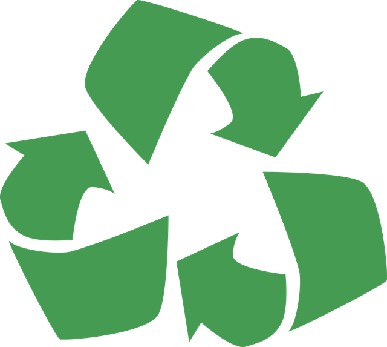
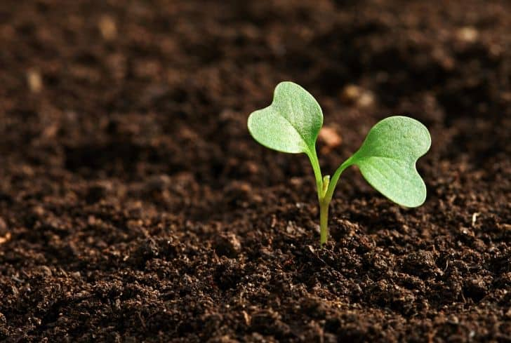

How to help

Reduce And Reuse
Reuse items in your household
Buy products that produce less packaging waste
Purchasing second-hand furniture, clothes, electronics, and toys
Choose reusable bottles for beverages whenever you can
Use a reusable bag for your groceries, and carry your own container to the restaurant for the leftovers.

Prevent Soil Erosion
Reuse items in your household
Take all necessary measures to prevent soil erosionprotect water resources close by used by wild animals
Take all necessary precautions that any loose sediment is kept away from natural waterways